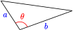

Section 3.4 Chapter 3 Summary and Review
Subsection Key Concepts
We put an angle \(\theta\) in standard position by placing its vertex at the origin and the initial side on the positive \(x\)-axis.
Coordinate Definitions of the Trigonometric Ratios.
\(\displaystyle \cos \theta = \dfrac{x}{r}\)
\(\displaystyle \sin \theta = \dfrac{y}{r}\)
\(\displaystyle \tan \theta = \dfrac{y}{x}\)

Trigonometric Ratios for Supplementary Angles.
\(\displaystyle \cos(180\degree - \theta) = -\cos \theta\)
\(\displaystyle \sin(180\degree - \theta) = \sin \theta\)
\(\displaystyle \tan(180\degree - \theta) = -\tan \theta \)

There are always two (supplementary) angles between \(0\degree\) and \(180\degree\) that have the same sine. Your calculator will only tell you one of them.
Area of a Triangle.
If a triangle has sides of length \(a\) and \(b\text{,}\) and the angle between those two sides is \(\theta\text{,}\) then the area of the triangle is given by
\begin{equation*} A = \dfrac{1}{2} ab \sin \theta \end{equation*}Law of Sines.
If the angles of a triangle are \(A, B\text{,}\) and \(C\text{,}\) and the opposite sides are respectively \(a, b,\) and \(c\text{,}\) then
\begin{equation*} \dfrac {\sin A}{a} = \dfrac {\sin B}{b} = \dfrac {\sin C}{c} \end{equation*}
or equivalently,
\begin{equation*} \dfrac {a}{\sin A} = \dfrac {b}{\sin B} = \dfrac {c}{\sin C} \end{equation*}We can use the Law of Sines to find an unknown side in an oblique triangle. We must know the angle opposite the unknown side, and another side-angle pair.
We can also use the Law of Sines to find an unknown angle of a triangle. We must know two sides of the triangle and the angle opposite one of them.
Remember that there are two angles with a given sine. When using the Law of Sines, we must check whether both angles result in possible triangles.
We use minutes and seconds to measure very small angles.
Fractions of a Degree.
One minute: \(~~~~~~1^{\prime} = \dfrac{1\degree}{60}\)
One second: \(~~~~~~1^{\prime \prime} = \dfrac{1^{\prime}}{60} = \dfrac{1\degree}{3600}\)
-
You can remember the trig values for the special angles if you memorize two triangles:


For the trigonometric ratios of most angles, your calculator gives approximations, not exact values.
The Law of Sines is not helpful when we know two sides of the triangle and the included angle. In this case we need the Law of Cosines.
Law of Cosines.
If the angles of a triangle are \(A, B\text{,}\) and \(C\text{,}\) and the opposite sides are respectively \(a, b,\) and \(c\text{,}\) then
\begin{gather*} a^{2} = b^{2} + c^{2} - 2bc \cos A\\ b^{2} = a^{2} + c^{2} - 2ac \cos B\\ c^{2} = a^{2} + b^{2} - 2ab \cos C \end{gather*}We can also use the Law of Cosines to find an angle when we know all three sides of a triangle.
We can use the Law of Cosines to solve the ambiguous case.
How to Solve an Oblique Triangle.
If we know: We can use: 1. One side and two angles (SAA) 1. Law of Sines, to find another side 2. Two sides and the angle opposite
one of them (SSA, the ambiguous
case)2. Law of Sines, to find another angle,
or Law of Cosines, to find another
side3. Two sides and the included angle
(SAS)3. Law of Cosines, to find the third
side4. Three sides (SSS) 4. Law of Cosines, to find an angle
Exercises Chapter 3 Review Problems
Exercise Group.
Use facts about supplementary angles to answer the questions in Problems 1and 2.
1.
If \(\sin \theta = \dfrac{1}{2}\text{,}\) what is \(\sin (180\degree-\theta)\text{?}\) What are the possible values for \(\cos \theta\text{?}\)
2.
If \(\sin \theta = \dfrac{3}{5}\text{,}\) what is \(\sin (180\degree-\theta)\text{?}\) What are the possible values for \(\cos \theta\text{?}\)
3.
Two sides of a triangle are 12 and 9 units long. The angle \(\theta\) between those sides is \(66\degree\text{.}\)
Sketch the triangle with \(\theta\) in standard position.
What is the area of the triangle?
Draw another triangle with the same area you found in (b) and with sides 12 and 9, but with an obtuse angle between those two sides. What is the obtuse angle?
4.
A triangle has base 5 units and altitude 6 units, and another side of length 8 units.
Sketch the triangle so that the acute angle \(\theta\) between the sides of length 5 and 8 is in standard position.
What is the area of the triangle?
What is \(\theta\) ?
Draw another triangle with the same area you found in (b) and with sides 5 and 8, but with an obtuse angle between those two sides. What is the obtuse angle?
Exercise Group.
For Problems 5–12,
Sketch an angle in standard position with the given properties.
Find \(\cos \theta,~\sin \theta,\) and \(\tan \theta\text{.}\)
Find the angle \(\theta\text{,}\) rounded to tenths of a degree.
5.
The point \((-2,3)\) is on the terminal side.
6.
The point \((-1,6)\) is on the terminal side.
7.
The point on the terminal side 20 units from the origin has \(x\)-coordinate \(-16\text{.}\)
8.
The point on the terminal side 25 units from the origin has \(x\)-coordinate \(-7\text{.}\)
9.
\(\theta\) is obtuse, and the point on the terminal side 6 units from the origin has \(y\)-coordinate \(5\text{.}\)
10.
\(\theta\) is obtuse, and the point on the terminal side 4 units from the origin has \(y\)-coordinate \(1\text{.}\)
11.
\(\theta\) is obtuse, and \(\sin \theta = 0.96.\)
12.
\(\theta\) is obtuse, and \(\sin \theta = 0.8.\)
Exercise Group.
For Problems 13–16, solve the equation. Round to the nearest \(0.1\degree\text{.}\)
13.
\(2.5 \sin \theta = 0.43\)
14.
\(5 \sin \theta = 1.25\)
15.
\(\dfrac{3}{\sin \theta} = 8\)
16.
\(0.6 = \dfrac{\sin \theta}{1.5} = 8\)
Exercise Group.
For Problems 17–18,
Find exact values for the base and height of the triangle.
Compute an exact value for the area of the triangle.
17.
18.

19.
Find the area of the triangular plot of land shown at right if \(\theta = 109.9\degree\text{.}\)
20.
What is the area of the triangular piece of tile shown at right?
Exercise Group.
For Problems 21–22, use the Law of Sines to find the indicated angle. Round to two decimal places.
21.
22.
Exercise Group.
For Problems 23–26, use the Law of Sines to find the indicated side. Round to two decimal places.
23.
24.
25.
26.
Exercise Group.
For Problems 27–30, use the Law of Cosines to find the indicated side. Round to two decimal places.
27.
28.
29.
30.
Exercise Group.
For Problems 31–40,
Sketch the triangle described.
Find the missing angle or length. Round answers to two decimal places.
31.
\(A = 111\degree\text{,}\) \(~ b = 9\text{,}\) \(~ c = 4\text{,}\) \(~ a = ?\)
32.
\(B = 32\degree\text{,}\) \(~ a = 7\text{,}\) \(~ c = 5\text{,}\) \(~ b =\) ?
33.
\(C = 87\degree\text{,}\) \(~ a = 26\text{,}\) \(~ b = 42\text{,}\) \(~ A = ?\)
34.
\(C = 11\degree\text{,}\) \(~ a = 49\text{,}\) \(~ b = 56\text{,}\) \(~ B = ?\)
35.
\(a = 16\text{,}\) \(~ B = 88\degree\text{,}\) \(~ C = 13\degree\text{,}\) \(~ b = ?\)
36.
\(b = 71\text{,}\) \(~ A = 19\degree\text{,}\) \(~ C = 110\degree\text{,}\) \(~ a = ?\)
37.
\(a = 5.8\text{,}\) \(~ b = 4.6\text{,}\) \(~ c = 5.2\text{,}\) \(~ C = ?\)
38.
\(a = 17.7\text{,}\) \(~ b = 18.4\text{,}\) \(~ c = 28.1\text{,}\) \(~ A = ?\)
39.
\(a = 52\text{,}\) \(~ b = 36\text{,}\) \(~ B = 19\degree\text{,}\) \(~ c = ?\)
40.
\(a = 83\text{,}\) \(~ c = 133\text{,}\) \(~ A = 31\degree\text{,}\) \(~ b = ?\)
Exercise Group.
For Problems 41–46,
Sketch and label a triangle to illustrate the problem.
Use the Law of Sines and/or the Law of Cosines to answer the questions.
41.
A radio tower is 40 miles from an airport, in the direction of \(23\degree\) east of north. Maria flies due north from the airport, and after 12 minutes, she sees the radio tower in the direction \(37\degree\) east of north. How far has she traveled, and what is her average ground speed?
42.
As Odysseus begins a sailing journey, an island 2 kilometers distant is in the direction \(12\degree\) west of north. After he sails due east for a time, the island is \(75\degree\) west of north. How far has Odysseus sailed?
43.
Delbert and Francine are standing 100 meters apart on one side of a stream. A tree lies on the opposite shore. The angle Delbert sees from Francine to the tree is \(37\degree\text{,}\) and the angle Francine sees from Delbert to the tree is \(46\degree\text{.}\) How far is Delbert from tree?
44.
Evel and Carla are estimating the distance across a canyon. They stand 75 meters apart and each site a larger boulder on the opposite side. Evel measures an angle of \(82\degree\) from Carla to the boulder, and Carla measures an angle of \(74\degree\) from Evel to the boulder. How far is Evel from the boulder?
45.
A blimp is flying in a straight line towards a football stadium. Giselle and Hakim have homes 520 meters apart, both directly below the blimp's path. At a moment when the blimp is between them, Giselle measures an angle of elevation to the blimp to be \(38\degree\text{,}\) and Hakim measures the angle of elevation to be \(42\degree\text{.}\)
How far is the blimp from Giselle?
How high is the blimp above the ground?
46.
A model plane flying in a straight line passes directly over both first Adi's and then Bettina's head. Adi sees an angle of elevation of \(17\degree\) to the plane and Bettina sees an angle of elevation of \(58\degree\text{.}\) Adi and Bettina are 150 meters apart, and Bettina is between Adi and the plane.
How far is the model plane from Bettina?
How high above the ground is the plane?
47.
You are viewing the Statue of Liberty from sea level at a horizontal distance of 65 meters from the point below the torch. Standing on its pedestal above sea level, the statue subtends an angle of \(19.5\degree\text{,}\) and the angle of elevation to the foot of the statue is \(32.3\degree\text{.}\) See the figure at right.

Find the distance \(AB\text{.}\)
What is the angle at \(C\text{?}\)
According to your measurements, how tall is the statue?
48.
King Kong is hanging from the top of a building. From a safe distance Sherman measures that Kong subtends an angle of \(1.5\degree\text{,}\) and the angle of elevation to Kong's foot is \(47.3\degree\text{.}\) See the figure at right. We know that Kong is 60 feet tall.

What is the angle to the top of the building (or Kong's highest point)?
What is the angle \(DEF\) at Kong's foot?
How long is \(DF\text{,}\) the distance from the top of the building to Sherman at \(F\text{?}\)
How tall is the building?
Exercise Group.
Here is a surveyor's technique for making a right angle.
Place two stakes at points \(A\) and \(B\text{,}\) 5 units apart.
Draw an arc of radius 4 centered at \(A\text{,}\) and an arc of radius 3 centered at \(B\text{.}\)
Place a third stake at \(C\text{,}\) the intersection of the two arcs.
Because \(3^2 + 4^2 = 5^2\text{,}\) the angle at \(C\) is a right angle.
Of course, the accuracy of the right angle constructed in this way depends on the accuracy of the measurements of length. Problems 49 and 50 refer to the surveyor's technique.
49.
Suppose that you use the surveyor's technique to create a right angle, but all three of your distance measurements are in error. The actual sides of your triangle are \(a = 2.9,~ b = 3.9,~ c = 5.1\text{.}\) How far off from \(90\degree\) is the angle at \(C\text{?}\)
50.
Suppose that you use the surveyor's technique to create a right angle, but the true distance measurements are\(a = 3.1,~ b = 4.1,~ c = 5.1\text{.}\) How far off from \(90\degree\) is the angle at \(C\text{?}\)
51.
Triangle \(ABC\) has sides \(a = 5,~ b = 8,~ c = 9\text{.}\) How far from \(B\) is the foot of the altitude from point \(A\text{?}\)
52.
Triangle \(ABC\) has sides \(a = 53,~ b = 27,~ c = 71\text{.}\) How far from \(C\) is the foot of the altitude from point \(A\text{?}\)
53.
The hour hand of Big Ben is 9 feet long, and the minute hand is 14 feet long. How far apart are the tips of the two hands at 5:00 o'clock?
54.
The largest clock in the world sits atop the Abraj Al Bait Towers in Mecca, Saudi Arabia. The clock face is 46 meters in diameter, the minute hand is 22 meters long, and the hour hand is 17 meters long. How far apart are the tips of the two hands at 8:00 o'clock?
55.
How far away is a star with a parallax of \(5.2^{\prime \prime}\) when observed from opposite ends of earth's orbit?
56.
How far away is a star with a parallax of \(23^{\prime \prime}\) when observed from opposite ends of earth's orbit?
Exercise Group.
Problems 57–58 provide a geometric interpretation of the Law of Sines. Recall the fact from geometry that the measure of an angle inscribed in a circle is half the intercepted arc.
57.
In the figure, the circle centered at \(O\) circumscribes \(\triangle XYZ\text{.}\) Suppose that \(\theta = \angle X\) is an acute angle, and the side opposite \(\theta\text{,}\) \(\overline{YZ}\text{,}\) has length \(s\text{.}\) Notice that \(\triangle OYZ\) is isosceles, because two of its sides are radii of the circle.
If \(W\) is the midpoint of \(\overline{YZ}\text{,}\) explain why \(\angle WOY = \theta\text{.}\)
Write \(\sin \theta\) in terms of \(s\) and the radius \(r\text{.}\) (Hint: Use the right triangle \(WOY\) and the fact that \(WY = \dfrac{1}{2}s\text{.}\))
Use your equation from (b) to write \(r\) in terms of \(\sin \theta\) and \(s\text{.}\)
Use your equation from (c) to write the diameter \(d\) in terms of \(\sin \theta\) and \(s\text{.}\)
58.
Let \(\triangle ABC\) have lengths \(a,~ b\text{,}\) and \(c\) opposite the angles \(A,~ B\text{,}\) and \(C\) as usual. Use the result of Problem 57, the Law of Sines, and the fact that every triangle has an acute angle to show that the quantities \(\dfrac{a}{\sin A}\text{,}\) \(\dfrac{b}{\sin B}\text{,}\) and \(\dfrac{c}{\sin C}\) all represent the diameter of the circumscribing circle.